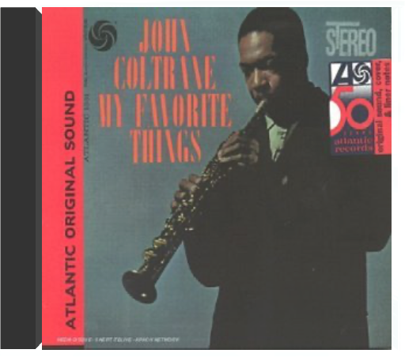
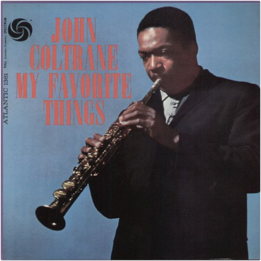

 my favorite thingsjohn coltrane  John Coltrane enregistre beaucoup en octobre 1960. Trois séances de studio vont lui permettre de sortir trois albums. My Favorite Things est l'un d'entre eux. Depuis le début de l'été Coltrane possède un nouveau quartette, le bon, celui qui lui permettra d'aller plus loin, jusqu'au bout de sa quête. Il travaille aussi le soprano, un instrument qui lui rappelle l'Afrique et abandonne les gammes majeures et mineures pour improviser sur des modes, ce que font depuis des siècles les musiciens arabes, africains et indiens. Depuis mai, il joue souvent à la Jazz Gallery, un nouveau club de New York. Un soir, un habitué du lieu lui tend une partition, celle de "My Favorite Things", une valse écrite par Richard Rogers et qu'interprète Julie Andrews dans la comédie musicale du même nom. Séduit, Coltrane l'enregistre au soprano, lui donnant le son nasillard du zoukra, sorte de hautbois d'Afrique du Nord. Ce thème, qu'il reprendra souvent, fait partie de sa légende. —Pierre de Chocqueuse  my favorite thingsjohn coltrane One of the most important jazz albums of all time, and a must for every collection! Originally released in 1960. Warner Jazz. 2005. |  Limited numbered box set containing three double 180gm vinyl LP pressings. Over the 90-year history of sound film, there have been a handful of instances where a director and a composer have formed a longtime partnership that resulted in a series of classical scores, creating music that stands the test of time. None, however, have been as long or as fruitful as the 43- year collaboration of Steven Spielberg and John Williams. None have encompassed such a wide range of subject matter or, more significantly, have had such an enormous impact on worldwide popular culture. From the ominous shark signature of Jaws to the five-note alien greeting of Close Encounters of the Third Kind; from the heroic march of Raiders of the Lost Ark to the moving themes for Schindler's List. The music Williams has written for more than two dozen Spielberg projects has not only served them brilliantly but entered the wider public consciousness. With a record fifty Academy Award nominations (more than any other composer) Williams has demonstrated, again and again, his ability to connect with audiences, both in the movie theater and in the concert hall. Seventeen of those nominations, and three of Williams' five Oscar wins (Jaws, E.T. and Schindler s List) have been for Spielberg films. The sheer variety of music, the depth of compositional skill on display, the powerful emotions that it evokes, makes John Williams and Steven Spielberg: The Ultimate Collection an extraordinary accomplishment. The Spielberg-Williams Collaboration and Williams On Williams were released on CD in the early 1990s. Earlier this year The Spielberg/Williams Collaboration Part III was released on CD and digital platforms. This latest collaboration includes new recordings of selections from most of the Maestro's scores for the director since 1997. All three albums are now pressed on vinyl for the first time, as part of this special super deluxe box-set. Williams and Spielberg fans have been waiting a long time for this exclusive vinyl box for and now it's finally here. All audio has been exclusively mastered in the cutting room for the ultimate listening experience. This six vinyl LP deluxe box set has a gold foil finishing and contains an exclusive 16-page booklet with photos and liner notes. All three gatefold jackets are pressed on thick cardboard with matt finish and the 180 gram audiophile records are housed in anti-static polybags. 12 secret inscriptions are written in the run-out grooves of all sides. |

Julien
Collection Total:
1 901 Items
1 901 Items
Last Updated:
Nov 1, 2021
Nov 1, 2021


 Made with Delicious Library
Made with Delicious Library